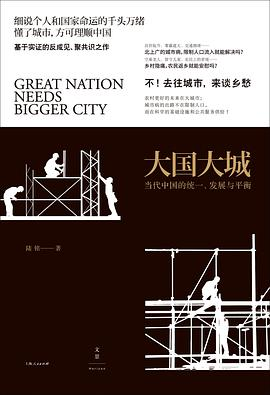

《大国大城》

总体观点
长期以来，中国城市发展中存在一种根深蒂固的误解：认为控制超大特大城市人口规模才能缓解“大城市病”，认为通过行政手段把建设用地指标和产业向中西部中小城市倾斜就能实现区域平衡。陆铭指出，这种“以均匀换平衡”的政策逻辑在经济规律面前是彻底南辕北辙的。
现代经济的增长核心是空间集聚。大城市的规模效应不仅能大幅提高生产率、孕育创新，还能创造海量低技能服务业岗位，从而为欠发达地区劳动力提供脱贫致富的广阔阶梯。真正的区域平衡，绝不是每个地方经济总量的均匀分布，而是“人均意义上的平衡”——人口自由流向大城市，留下的人拥有更多人均土地与自然资源，最终实现各地区人均GDP和生活质量的均等化。
破解大国难题的唯一正确道路是“在集聚中走向平衡”：深化户籍制度改革，推进建设用地指标跨省跨区域流转与“人地钱挂钩”，以技术、管理与精细化规划来科学治理交通拥堵等大城市病，让中国经济在统一大市场中释放磅礴的聚集红利。
核心观点
-
1. 区域平衡发展的核心是“人均GDP平衡”，而非经济总量的均匀分布
只要人口能够自由自由流动，聚集在沿海大都市圈的人创造高产值，留在内地的人人均土地、林业和农业资源增多，两地的人均收入自然走向收敛。
美国加州和纽约州贡献了巨大的经济体量，而中西部农业州经济总量虽小，但人均收入与加州并无本质鸿沟，靠的正是不受户籍限制的人口自由流动。 -
2. 地理的力量不可违背：沿海与核心大都市圈拥有天生区位优势
全球化时代的制造业高度依赖廉价海运港口，现代高端服务业高度依赖面对面的信息交互与人才集聚密度，违背地理规律搞产业内陆转移必然造成产能过剩。
中西部某些偏远县城举债数百亿修建高科技产业园和保税区，因为缺乏港口区位与配套供应链，项目竣工后厂房荒草丛生沦为空城鬼城。 -
3. 人口流动与建设用地指标错配，推高了一线房价并造就了三四线空城
过去政策将土地指标大量拨给人口净流出的中西部中小城市，导致沿海人口流入大城市土地供给严重短缺，房价被动暴涨，而内地大量住宅空置烂尾。
人口不断涌入的上海和深圳过去住宅用地供应极为严苛，供不应求导致房价飙升；而东北和西北部分收缩型县城房产过剩，甚至出现白菜价房产无人接盘。 -
4. 大城市具有显著的技能互补效应：高端产业离不开低技能服务业
高科技研发人员与金融白领的时间价值极高，他们需要保洁、外卖、家政与餐饮等丰富的生活服务来维持高效运转。粗暴清退低端人口只会瘫痪城市运转并推高全社会运行成本。
若清理掉写字楼周边的平价快餐摊与快递代收点，程序员被迫花两小时排队吃饭或自己做饭，高科技企业的实际运转效率与营商成本大幅恶化。 -
5. 城市病的根源在于规划和治理能力的滞后，而非人口规模本身
交通拥堵、环境污染和学位紧张，可以通过增加土地容积率、织密地下轨道交通网络、开放多元办学等供给侧技术创新来解决，而非简单粗暴地限人控人。
东京都人口超3700万，远超北京上海，但凭借全世界密度最高的轨道交通换乘网络与精细化垃圾分类治理，依然保持了高效整洁与畅通运行。 -
6. 推进户籍制度改革与“人地钱挂钩”，是大国治理的关键突破口
进城务工人员为城市奉献了青春与税收，应当赋予其同等的基本公共服务与市民待遇。财政转移支付与建设用地指标应跟着实际常住人口走，实现正义与效率的统一。
推广居住证转户籍与积分落户常态化，推行农民工随迁子女就地参加高考，能彻底释放数亿流动人口的长期消费潜力并稳定内需基本盘。
全书结构
-
第一章 中国经济的欧洲化
指出欧洲主权债务危机的根源在于统一货币而缺乏统一财政与劳动力自由流动；中国必须警惕地方保护主义分割市场带来的“欧洲化”割裂风险。
各省市曾一度各自保护本地汽车品牌、对外地车牌和异地企业设立隐性准入门槛，严重破坏了全国统一大市场的规模经济优势。 -
第二章 在集聚中走向平衡
破除关于区域空间的传统三大误解，引入新经济地理学3D理论（密度Density、距离Distance、分割Division），论证要素自由流动才能带来真正的平衡。
展示中国地图上“胡焕庸线”两边的人口分布与自然禀赋差异，说明试图靠行政命令拉平东西部经济密度的做法严重违背自然与经济规律。 -
第三章 打破大国发展的“不可能三角”
解析政策制定中“经济增长、区域均匀分布、减少财政转移支付”三者不可兼得的内在矛盾，揭示行政配置资源背离人口流向的沉重效率代价。
把宝贵的国家重大基础设施投资硬性摊派到地广人稀、车流量极低的高原山区高速公路，导致项目连年巨额亏损且缺乏偿债来源。 -
第四章 警惕“扭曲之手”
反思地方政府盲目追求GDP政绩引发的重复建设、同质化产业补贴与土地过度开发，呼吁建立以人为本的科学政绩考核评价机制。
几十个相邻的地级市同时砸重金补贴发展光伏、新能源汽车或机器人产业，造成全国范围内的同质化恶性内卷竞争与产能严重过剩。 -
第五章 大城市不死
剖析大城市的强韧生命力与包容性就业创造机制：批驳“以业控人”的荒谬逻辑，证明挑选高学历排斥服务业劳动力的政策必将反噬城市活力。
如果强行取缔街头菜市场与便民早点摊，白领早餐成本翻倍且耗时增加，直接降低了整座都市对顶级创新人才的宜居吸引力。 -
第六章 全球视野下的大城市
对比东京、纽约、巴黎等国际顶级超级大都市的发展规律，运用齐普夫定律（Zipf's Law）论证中国京沪广深等一线城市人口远未达到理论上限。
东京都市圈集中了全日本近三分之一的人口，其城市功能并未瘫痪，反而成为引领日本科技、文化与金融创新的绝对心脏。 -
第七章 城市化之辩
以详实数据回应外界关于“城市扩张占用耕地威胁粮食安全”的担忧，证明农民进城居住比在农村分散建房更能节约土地、恢复耕地复垦。
农民在老家盖两层独栋小洋楼人均占地两三百平米，而进城住高层住宅人均仅占地三十平米，宅基地腾退复垦反而能净增有效耕地面积。 -
第八章 城市社会分割之困
直击农民工群体面临的制度性困境：户籍制度带来的子女教育、医疗社保及购房壁垒，抑制了数亿打工者的即期消费与市民化认同感。
因为没有户籍，打工父母不得不将年幼子女送回农村老家成为留守儿童，既造成了亲情撕裂与成长创伤，也限制了家庭在城市的沉淀扎根。 -
第九章 向“城市病”宣战
提出治理交通拥堵与环境污染的系统性对策：向技术与精细化管理要红利，以疏代堵，治理行为（如拥堵费、限行）而非针对特定人群身份。
新加坡通过电子道路收费系统（ERP）动态调节早晚高峰核心路段收费标准，用价格机制精准治堵，无需采取粗暴限号限购措施。